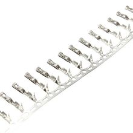

Перемычки Female (мама) для коннекторов 2.54 мм
Это набор соединительных проводов-перемычек с гнездовым контактом («мама») для разъёмов с шагом 2,54 мм. Обычно такие перемычки используют для быстрого прототипирования и подключения модулей к макетным платам и штыревым колодкам.

Документация
Характеристики
Подробнее
Перемычки Female 2.54 мм применяются для соединения плат, датчиков, модулей и макетных плат без пайки. Канонически это DuPont-style jumper wires под штыревые разъёмы с шагом 0.1″ (2.54 мм). В типовом исполнении такие провода бывают в виде одиночных жил или готовых шлейфов, чаще всего со стандартной калибровкой 26 AWG и изоляцией разных цветов. Назначение — удобная разводка сигналов, питания и земли в макетных и опытных сборках. Совместимы с обычными male headers, breadboard и аналогичными 2.54 мм разъёмами.